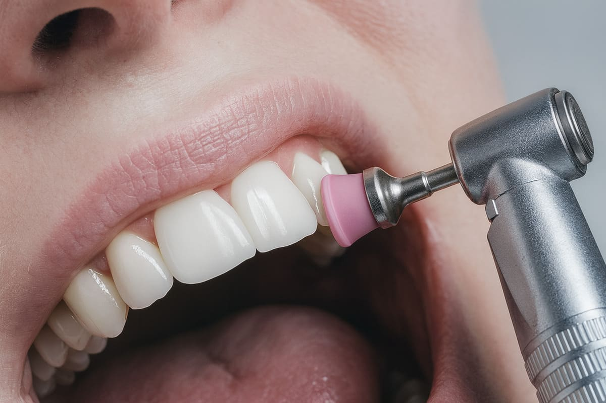
Profilaxis Dental
Limpieza profunda para eliminar sarro, placa y prevenir enfermedades.

Resinas Estéticas
Restauración de dientes con materiales que imitan el color natural.
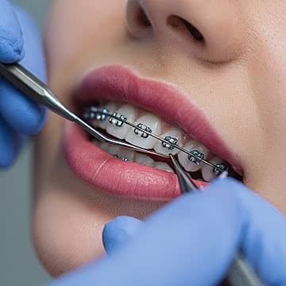
Ortodoncia
Corrección de alineación dental con brackets modernos.
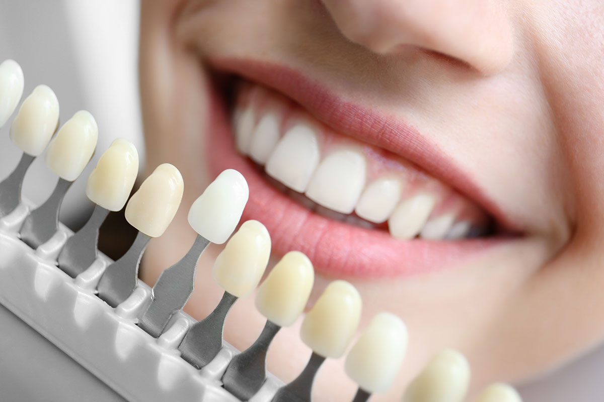
Blanqueamiento Dental
Mejora el tono de tus dientes de forma segura y efectiva.
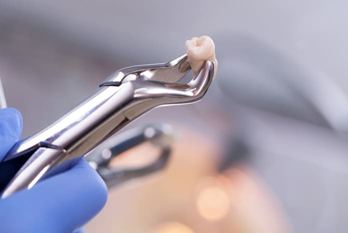
Extracciones
Procedimientos seguros para retirar piezas dañadas o muelas del juicio.
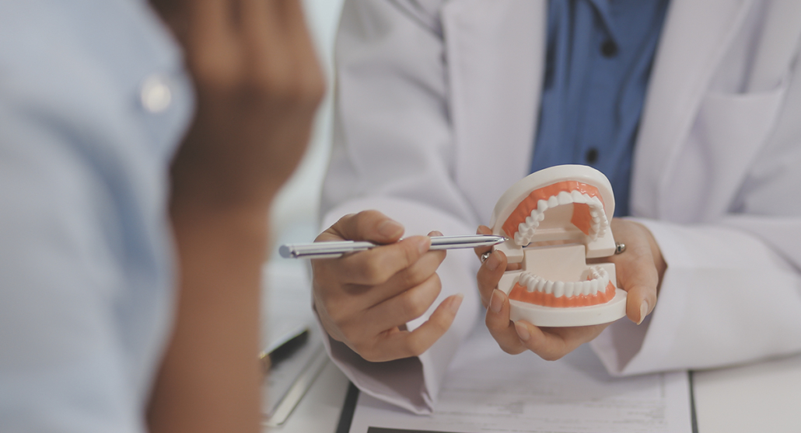
Revisión General
Evaluación completa para mantener una salud bucal óptima.
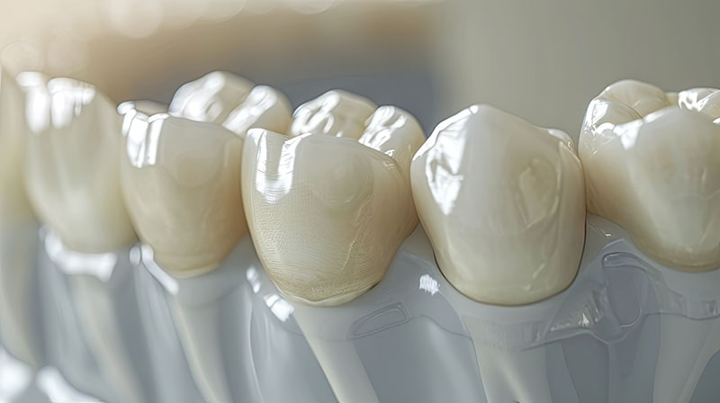
Prótesis Fija
Reemplazo de dientes perdidos mediante coronas o puentes cementados, brindando mayor estabilidad, estética y funcionalidad.

Prótesis Removible
Solución práctica y económica que permite reemplazar uno o varios dientes, pudiendo retirarse fácilmente para su limpieza.
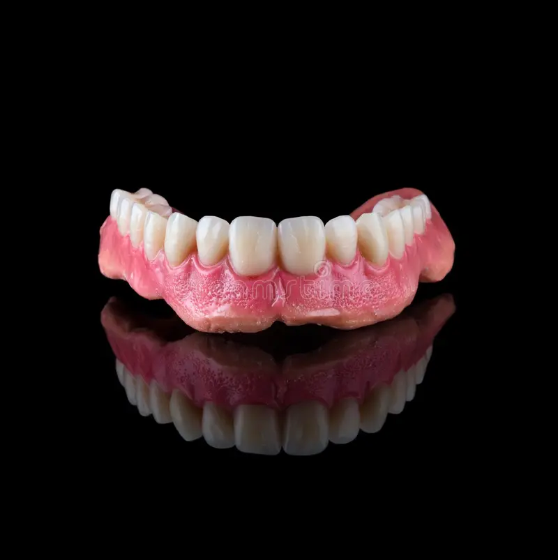
Prótesis Total
Rehabilitación completa para pacientes sin dientes, devolviendo la capacidad de masticar, hablar y sonreír con confianza.
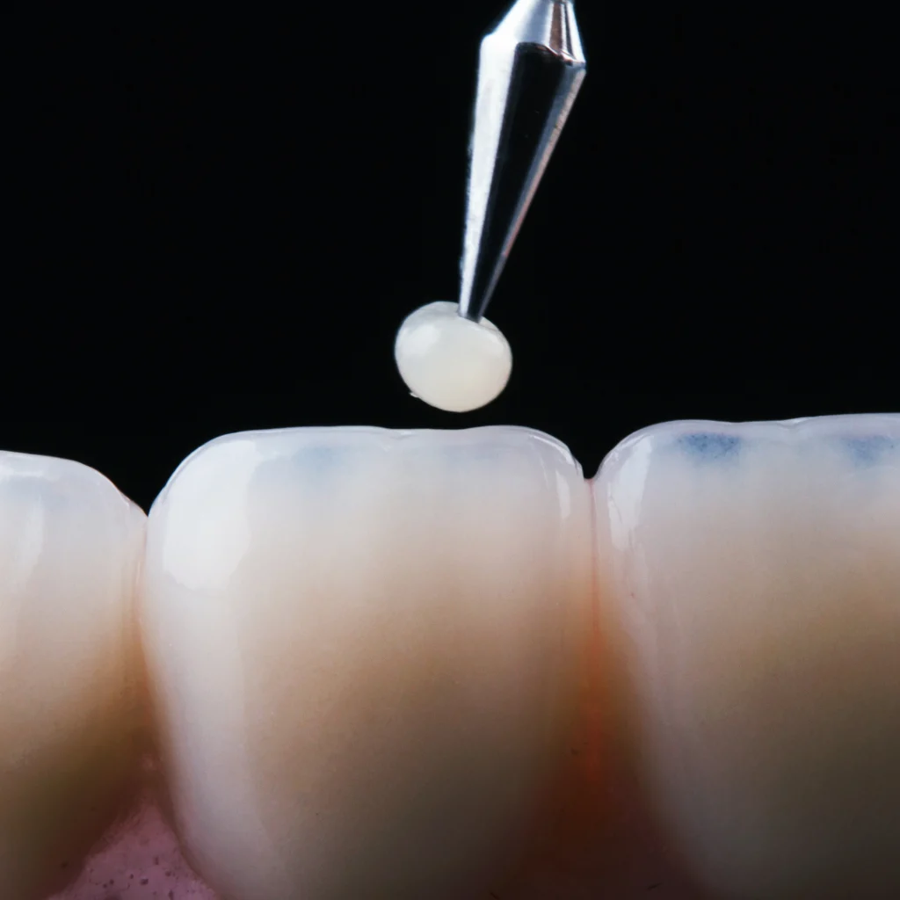
Carillas Dentales
Mejora estética de la sonrisa con carillas de alta calidad, incluyendo carillas inyectables y carillas de mínimo desgaste para resultados naturales y conservadores.
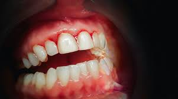
Raspado y Alisado Radicular
Tratamiento periodontal profundo que elimina sarro debajo de las encías y alisa las raíces dentales para combatir enfermedades como la gingivitis y periodontitis.
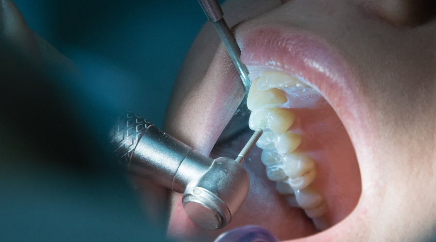
Endodoncia
Tratamiento especializado que elimina la pulpa dental infectada, alivia el dolor y permite conservar el diente natural, devolviendo su función y salud.
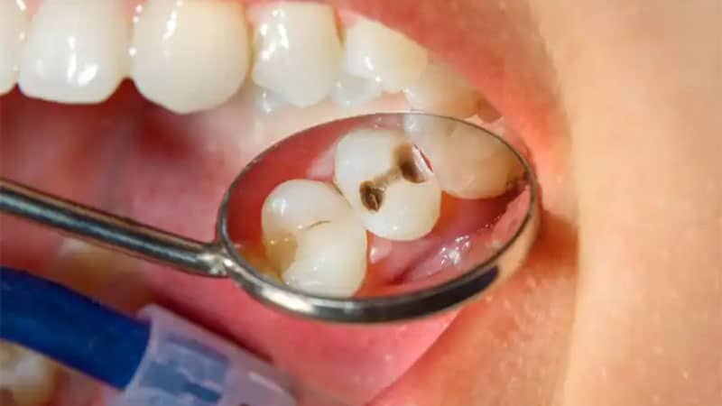
Pulpotomía
Procedimiento que elimina la parte afectada de la pulpa dental en dientes temporales, ayudando a conservar la pieza y evitar infecciones mayores.
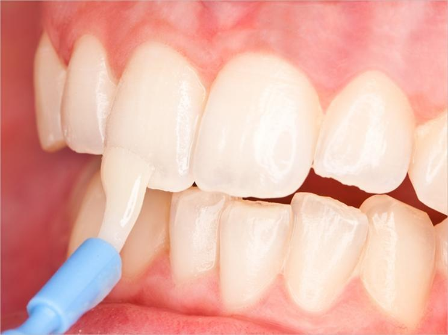
Aplicación de Flúor
Tratamiento preventivo que fortalece el esmalte dental y ayuda a prevenir la formación de caries, especialmente en niños y adolescentes.
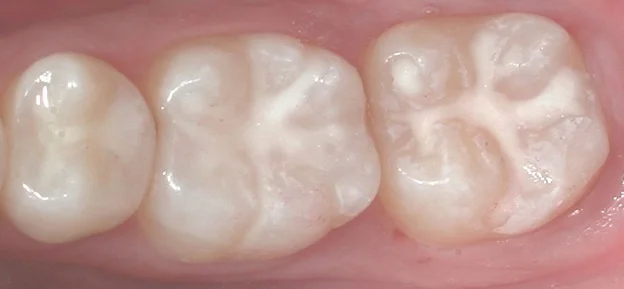
Sellado de Fosetas y Fisuras
Procedimiento preventivo que protege las superficies de los dientes aplicando un sellador que evita la acumulación de bacterias y la aparición de caries.